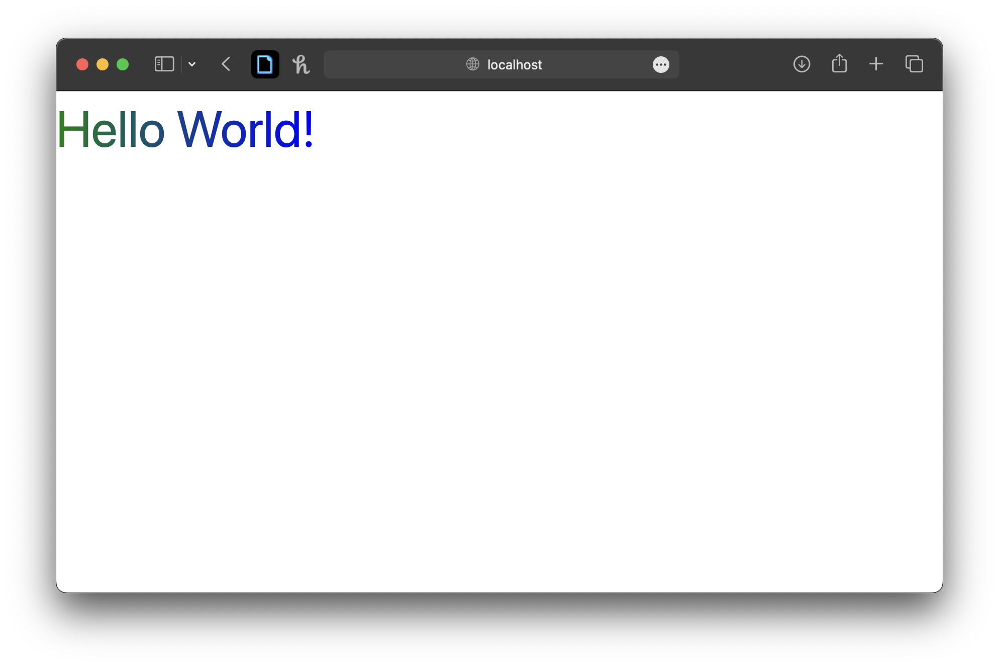

If you like python and want to do web development and haven’t checked out FastHTML you need to stop reading this right now and go to fastht.ml right now.
It comes bundled with Pico CSS by default, an awesome, lightweight CSS framework. If you’ve done much frontend development though, you might just be reaching for tailwind CSS as you start really tying an app together.
HTML and CSS
As a quick refresher to anyone who doesn’t do much web development, css is the language that tells a browser how to format html. This is the most basic html project I can think of, which just prints a header to the browser with some basic formatting.
my-project/
├── index.html
└── styles.cssindex.html
<!DOCTYPE html>
<head>
<title>My Minimal HTML</title>
<link rel="stylesheet" href="styles.css">
</head>
<body>
<h1>Hello, World!</h1>
</body>
</html>styles.css
h1 {
color: blue;
font-size: 18px;
}Above, we have just one class, “H1”, but it can get unwieldy to define and maintain classes for all of the elements you put in a webapp. Think of all the types of text, buttons, labels, boxes, forms, images and more - these will all have css styles attached to them.
Tailwind CSS
An alternative to the traditional approach above is to use a utility-first framework like Tailwind CSS. Tailwind allows you to define the styling in the html in a highly compact way, like this:
my-project/
└── index.htmlindex.html
<!DOCTYPE html>
<head>
<title>My Minimal HTML</title>
<script src="https://cdn.tailwindcss.com"></script>
</head>
<body>
<h1 class="text-blue-500 text-lg">Hello, World!</h1>
</body>
</html>This leads to just one file, where Tailwind CSS is downloaded directly from the CDN. The tailwind script automatically scans the html, figures out the full css for each Tailwind class, and adds (injects) the styling to the html with <style> tags (another way to add css to html). So inside the <head> tags you might have something like this:
<style>
.text-blue-500 { color: #3b82f6; }
.text-lg { font-size: 1.125rem; }
/* and so on... */
</style>It might not seem like you gain much here, but tailwind gets extremely powerful as the styling starts to become more complicated.
Customization
However, tailwind is highly customizable (through a file you create in your project tailwind.config.js) and this customization can’t be done the way we included the tailwind script from the CDN. Instead, we will have to run tailwind on our code to generate the CSS file that will be used to render the webpage.
Tailwind Installation
Usually, tailwind is called while building a web app in javascript. However, we’re using python so we’ll have to do things a little more manually. For this, tailwind has a CLI.
You can download and install the CLI directly, but I prefer to use package managers; they keep things up to date, and also keep a list of what I’ve installed so I can go back later and remove them if I want. Usually, I’d use homebrew (I use a mac), but I can’t see the homebrew formula referenced on the official tailwind website. So instead I’m just going to use npm to install it globally on my machine with:
npm install -g tailwindcssInstalling it globally means it will be available to all your projects.
Setting up a FastHTML project
Ok, let’s take a minute to set up a FastHTML project.
I use the pdm package manager. This will set up my virtual environment and a basic file structure. I would initialize the project like this (I decided to call it basic_website), following all the default settings, starting in my projects folder:
mkdir basic_website
cd basic_website
pdm init
mkdir static src/css src/app.pyMy directory now looks like this. Running pdm has set up me up with the directory structure, the .gitignore file, the pyproject.toml file and a basic README.md.
basic_website
├── .gitignore
├── .pdm-python
├── .venv
│ ├── bin
│ | ├── activate
│ | ...
│ ...
├── README.md
├── pyproject.toml
├── src
│ ├── app.py
│ ├── basic_website
│ | └── __init__.py
| └── css
├── static
└── tests
└── __init__.pyYou can then add FastHTML with:
pdm add python-fasthtmlYou might have to activate the virtual environment (often editors like vscode will detect them automatically). You can do that with:
source .venv/bin/activateStarting a Basic Webpage
In the src folder, I made app.py here like so:
src/app.py
import fasthtml.common as fh
app, rt = fh.FastHTML()
rt = app.route
@rt("/")
def get():
return fh.Div(fh.P("Hello World!"), hx_get="/change")
fh.serve()You can run this with:
python src/app.pyAnd you can see your new webpage in your browser if you go to http://localhost:5001
Awesome!
Input Custom CSS
In addition to the tailwind classes you use, you’ll probably also want to add some custom css styling. I’m going to call mine main.css and put it in src/css.
To include tailwinds utility classes, we have to put this at the top of the css file:
src/css/main.css
@tailwind base;
@tailwind components;
@tailwind utilities;I’m going to add css that makes the text multi-colored by adding a “multicolor-text” class:
src/css/main.css
.multicolor-text {
display: inline-block;
background: linear-gradient(to left, blue, green);
background-clip: text;
color: transparent;
}Tailwind
Initialization
In the directory where you’re writing your html, you can initialize tailwind with:
tailwind initWhich creates tailwind.config.js, the file that will contain your customizations. It will set up the structure of the file, but you will need to at least add the types of files to scan (including .py files) like this:
tailwind.config.js
/** @type {import('tailwindcss').Config} */
module.exports = {
content: [
"./**/*.{py,html,qmd,md,js,jsx,ts,tsx,css}", // Scan all relevant files
],
theme: {
extend: {},
},
plugins: [],
};Now, tailwind will detect each of these filetypes when it crawls through the directory, and turn any tailwind classes it sees into css.
Running Tailwind
Now that we’ve set up tailwind, we will have to run it using the CLI, like this, specifying our input css file and our output css file (which we will reference in our FastHTML project).
tailwind -i ./src/css/main.css -o ./static/main.cssIt’s a bit of a pain to run this every time you update your css, so you can set it to run continuously (i.e. keep your terminal open) by adding the watch flag:
tailwind -i ./src/css/main.css -o ./static/main.css -wWhen you’re distributing it for production, you can minify the css to make it more compact by adding the minify flag:
tailwind -i ./src/css/main.css -o ./static/main.css -mFastHTML but with Tailwind
Now, I have to add 2 things to my app.py, the link to the stylesheet, and this code which allows FastHTML to look for main.css in my static folder:
src/app.py
import fasthtml.common as fh
1main_css = fh.Link(rel="stylesheet", href="main.css", type="text/css")
app = fh.FastHTML(hdrs=(main_css))
rt = app.route
2@rt("/{fname:path}.{ext:static}")
def get(fname: str, ext: str):
return fh.FileResponse(f"static/{fname}.{ext}")
@rt("/")
def get():
3 return fh.Div(fh.H1("Hello World!", cls="multicolor-text text-[50px]"))
fh.serve()- 1
- Add the css file to the app.
- 2
- Allow FastHTML to look in the static folder (where tailwind puts the css file).
- 3
-
Actually use css to style the text, applying the custom
multicolor-textclass from ourmain.cssfile, and the tailwindtext-[50px]class to set the text to 50px.
Result

Summary
Let’s recap:
- To use tailwind, you will have to install it. I installed it globally above.
- Then you initialize your project, creating the FastHTML app.
- Add a custom css file and run tailwind.
- Add the output css file to your FastHTML app.